Flexbox Froggy
- CSSコードを書くことで、フロギーを助けてください!
- このゲームでは、レイアウトを簡単にするモジュールであるCSSフレックスボックスをマスターすることができます。
- これにより、1行または2行のコードのみを使用して、Webページ上の要素の配置、間隔、およびラップを制御できます。
Flexbox Froggy - Lv. 1/24
Flexbox Froggyへようこそ!これはカエルたちを、CSSコードを書いて助けてあげるゲームです。
justify-contentを使って、このカエルを右の蓮の葉まで連れていってあげましょう。
このプロパティは、アイテムを水平方向に並べるものです。以下の値を取ります。
- flex-start: アイテムはコンテナーの左側に並びます。
- flex-end: アイテムはコンテナーの右側に並びます。
- center: アイテムはコンテナーの中央に並びます。
- space-between: アイテムはその間に等しい間隔を空けて表示されます。
- space-around: アイテムはその周囲に等しい間隔を空けて表示されます。
例えば、justify-content: flex-end;はカエルを右側へ動かします。
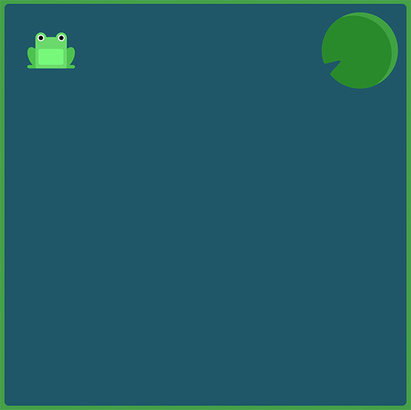
#pond { display: flex; justify-content: flex-end; }
Flexbox Froggy - Lv. 2/24
もう一度justify-contentを使って、カエルたちを蓮の葉まで連れていきましょう。
覚えていますか、このCSSプロパティはアイテムを水平に並べるもので、次の値を取ります。
- flex-start: アイテムはコンテナーの左側に並びます。
- flex-end: アイテムはコンテナーの右側に並びます。
- center: アイテムはコンテナーの中央に並びます。
- space-between: アイテムはその間に等しい間隔を空けて表示されます。
- space-around: アイテムはその周囲に等しい間隔を空けて表示されます。
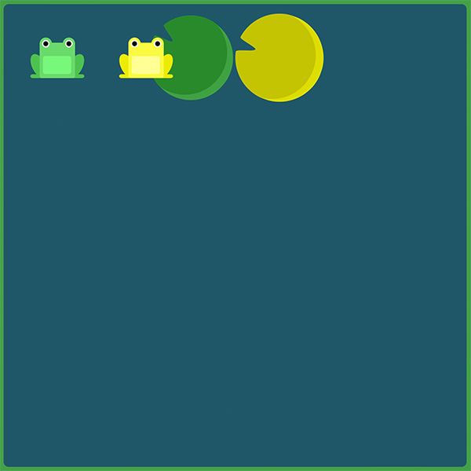
#pond { display: flex; justify-content: center; }
Flexbox Froggy - Lv. 3/24
justify-contentだけを使って三匹のカエルを全て蓮の葉に乗せてあげましょう。
この蓮の葉は、それぞれの周囲にたくさんの隙間が空いています。
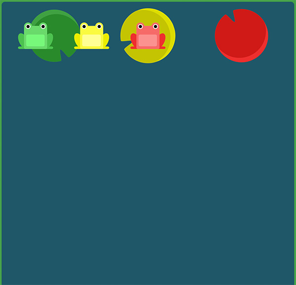
#pond { display: flex; justify-content: space-around; }
Flexbox Froggy - Lv. 4/24
蓮の葉は両岸まで流されてしまいました。間隔はさらに開いています。
justify-contentを使いましょう。蓮の葉は等間隔に並んでいます。
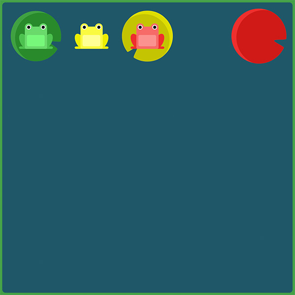
#pond { display: flex; justify-content: space-between; }
Flexbox Froggy - Lv. 5/24
今度はalign-itemsを使って池の下のほうへカエルを連れていきましょう。
このCSSプロパティーはアイテムを垂直に並べ、以下の値をとります。
- flex-start: アイテムはコンテナーの上部に並びます。
- flex-end: アイテムはコンテナーの下部に並びます。
- center: アイテムはコンテナーの垂直方向中央に並びます。
- baseline: アイテムはコンテナーのベースラインに表示されます。
- stretch: アイテムはコンテナーの大きさに合うよう広がります。
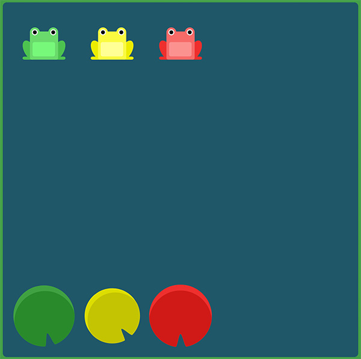
#pond { display: flex; align-items: flex-end; }
Flexbox Froggy - Lv. 6/24
justify-contentとalign-itemsの組み合わせを使って、カエルを池の中央へ連れていきましょう。
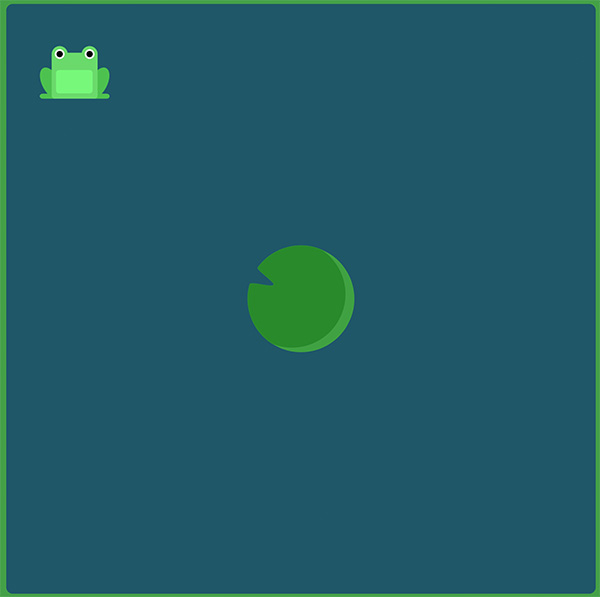
#pond { display: flex; justify-content: center; align-items: center; }
Flexbox Froggy - Lv. 7/24
再びカエルが池を渡ろうとしています。今度の蓮の葉はずいぶん間隔が空いているようですね。
justify-contentとalign-itemsの組み合わせを使いましょう。
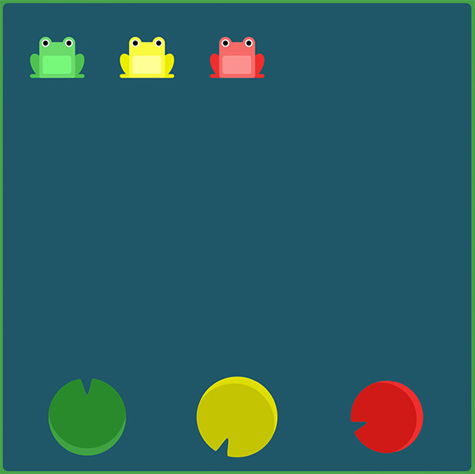
#pond { display: flex; justify-content: space-around; align-items: flex-end; }
Flexbox Froggy - Lv. 8/24
flex-directionを使って、カエルたちをそれぞれの蓮の葉に乗せましょう。
このCSSプロパティーはコンテナー内でアイテムが配置される方向を決定します。
また以下の値を取ります。
- row: アイテムは文章と同じ方向に配置されます。
- row-reverse: アイテムは文章と逆の方向に配置されます。
- column: アイテムは上から下に向かって配置されます。
- column-reverse: アイテムは下から上に向かって配置されます。
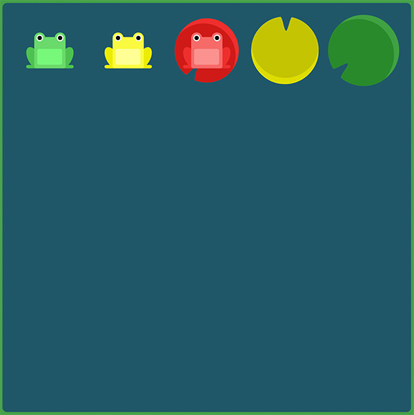
#pond { display: flex; flex-direction: row-reverse; }
Flexbox Froggy - Lv. 9/24
flex-directionを使って、カエルたちが自分の蓮の葉を見つけるのを助けてあげましょう。
このCSSプロパティーはコンテナー内でアイテムが配置される方向を決定します。
また以下の値を取ります。
- row: アイテムは文章と同じ方向に配置されます。
- row-reverse: アイテムは文章と逆の方向に配置されます。
- column: アイテムは上から下に向かって配置されます。
- column-reverse: アイテムは下から上に向かって配置されます。
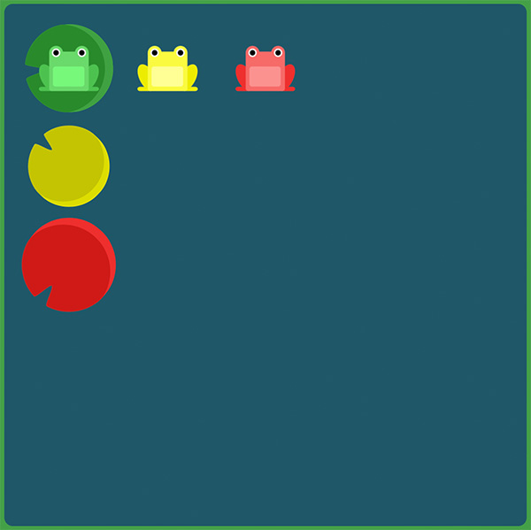
#pond { display: flex; flex-direction: column; }
Flexbox Froggy - Lv. 10/24
カエルたちがそれぞれの蓮の葉に乗るのを助けてあげましょう。
もうほとんど乗っているようにも見えますが、ちゃんと乗せるにはflex-directionとjustify-contentの両方を使う必要があります。
方向としてrow-reverseやcolumnを指定した場合、始点と終点もまた逆になることに気を付けてください。
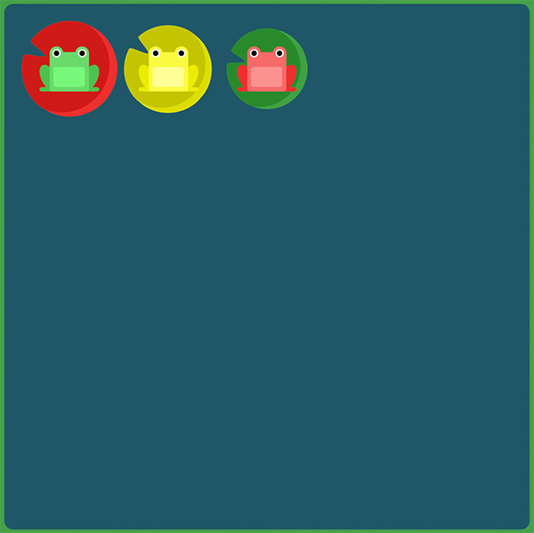
#pond { display: flex; flex-direction: row-reverse; justify-content: flex-end; }
Flexbox Froggy - Lv. 11/24
flex-directionとjustify-contentを使って、カエルたちがそれぞれの蓮の葉を見つけるのを助けてあげてください。
flexの方向がcolumnのとき、justify-contentは垂直方向の、align-itemsは水平方向の並び方を変えるようになることに気を付けてください。
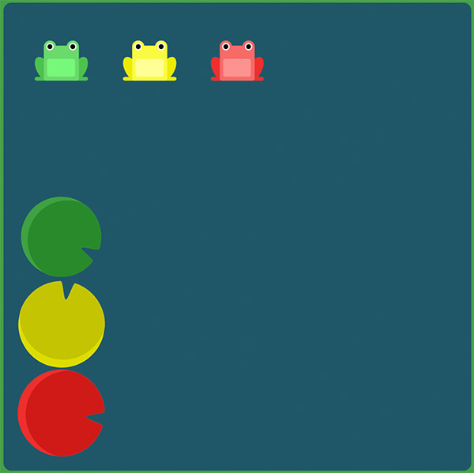
#pond { display: flex; flex-direction: column; justify-content: flex-end; }
Flexbox Froggy - Lv. 12/24
flex-directionとjustify-contentを使って、カエルたちがそれぞれの蓮の葉を見つけるのを助けてあげてください。
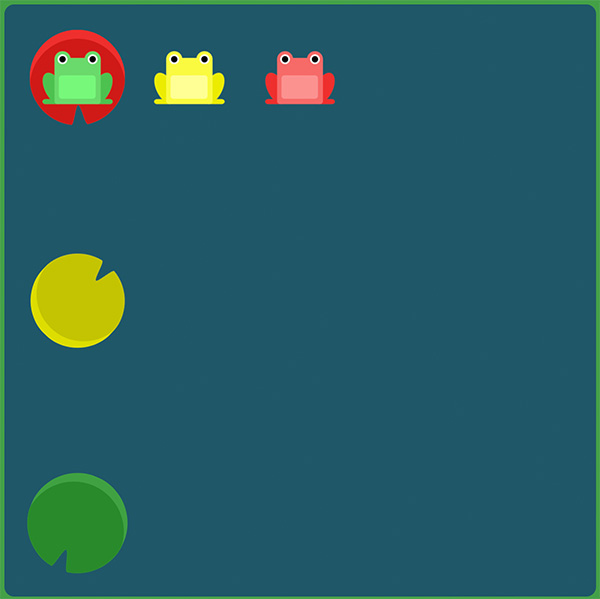
#pond { display: flex; flex-direction: column-reverse; justify-content: space-between; }
Flexbox Froggy - Lv. 13/24
flex-directionとjustify-content、align-itemsを使って、カエルたちがそれぞれの蓮の葉を見つけるのを助けてあげてください。
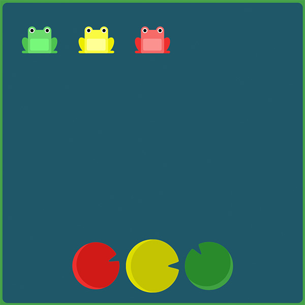
#pond { display: flex; flex-direction: row-reverse; justify-content: center; align-items: flex-end; }
Flexbox Froggy - Lv. 14/24
コンテナーの行や列の順序を逆にするだけでは足りないこともままあります。そういった場合、個別のアイテムにorderプロパティーを適用することができます。アイテムはデフォルトでは0の値を取りますが、正や負の整数値を設定することもできます。
orderプロパティーを使って、蓮の葉に合うようカエルたちを並び替えてください。
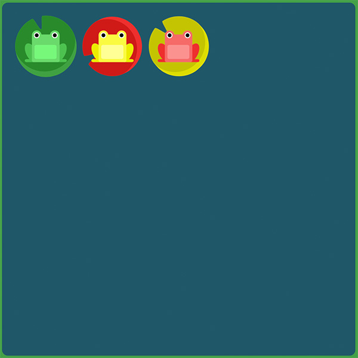
#pond { display: flex; } .yellow { order: 1; }
Flexbox Froggy - Lv. 15/24
orderプロパティーを使って、赤いカエルを彼の蓮の葉へ送ってください。
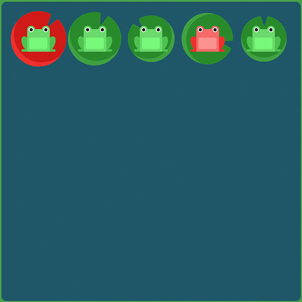
#pond { display: flex; } .red { order: -1; }
Flexbox Froggy - Lv. 16/24
他にも、個別のアイテムへ設定できるプロパティーとしてalign-selfがあります。
このプロパティーはalign-itemsと同じ値を受け付け、指定のアイテムの状態だけを変更します。
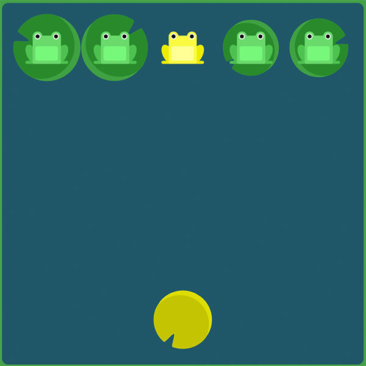
#pond { display: flex; align-items: flex-start; } .yellow { align-self: flex-end; }
Flexbox Froggy - Lv. 17/24
orderをalign-selfを組み合わせて、カエルたちを目的地へ連れて行ってあげましょう。
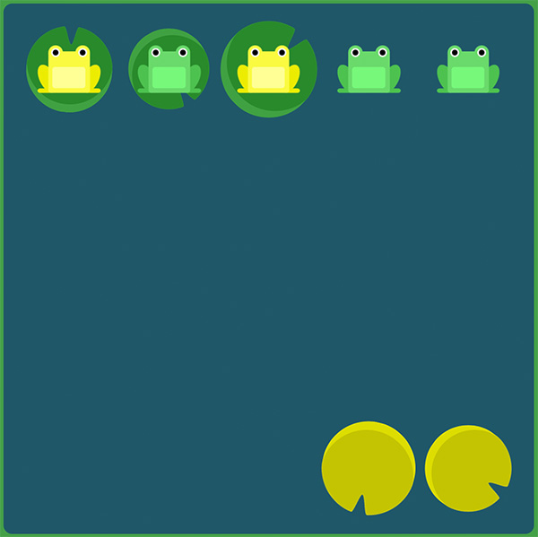
#pond { display: flex; align-items: flex-start; } .yellow { order: 3; align-self:flex-end; }
Flexbox Froggy - Lv. 18/24
おやおや、カエルたちが一列の蓮の葉の上で窮屈そうにしていますね。
flex-wrapプロパティーを使って、彼らを広げてあげてください。
このプロパティーは以下の値を取ります。
- nowrap: 全てのアイテムは、ひとつの行にフィットします。
- wrap: アイテムは他の行へ折り返します。
- wrap-reverse: アイテムは逆順になって他の行へ折り返します。
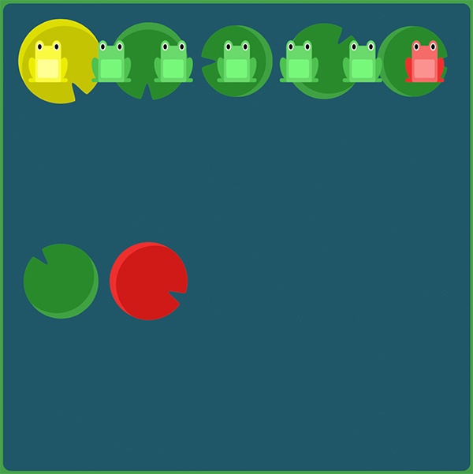
#pond { display: flex; flex-wrap: wrap; }
Flexbox Froggy - Lv. 19/24
flex-directionとflex-wrapを使って、このカエルの大群がきちんと三列に並ぶようにしてあげてください。
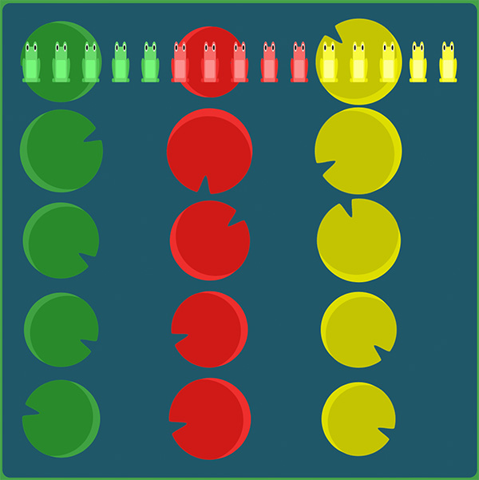
#pond { display: flex; flex-direction: column; flex-wrap: wrap; }
Flexbox Froggy - Lv. 20/24
flex-directionとflex-wrapの二つのプロパティーはよく一緒に使われます。
そこで、これらを統合するショートハンドプロパティーflex-flowが作られました。
このショートハンドプロパティーは空白文字で分割した二つのプロパティーの値を受け付けます。
例えば、flex-flow: row wrapとすることで、並び方と折り返し方を指定することができます。
試しに、flex-flowを使ってさっきの問題をやり直してみましょう。
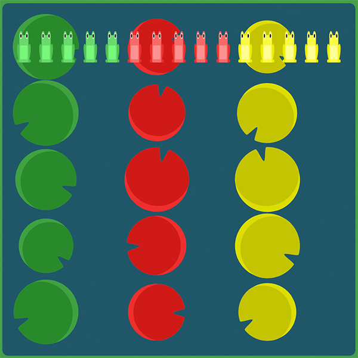
#pond { display: flex; flex-flow: column wrap; }
Flexbox Froggy - Lv. 21/24
カエルたちが池いっぱいに広がっていますが、蓮の葉は上方に集まっています。
複数の行が他の行とどう距離を取り広がるのかを指定するのに、align-contentを使うことができます。
このプロパティーは以下の値を取ります。
- flex-start: 行はコンテナーの上側に詰められます。
- flex-end: 行はコンテナーの下側に詰められます。
- center: 行はコンテナーの中央に詰められます。
- space-between: 行はその間に等しい間隔を空けて表示されます。
- space-around: 行はその周囲に等しい間隔を空けて表示されます。
- stretch: 行はコンテナーに合うよう引き延ばされます。
混乱したかもしれませんが、align-contentは行間の余白を決めるもので、align-itemsはコンテナーに含まれるアイテム全体としての配置を決めるものです。一行だけの場合はalign-contentは何も効果がありません。
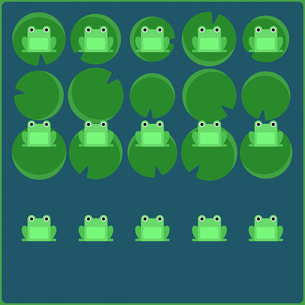
#pond { display: flex; flex-wrap: wrap; align-content: flex-start; }
Flexbox Froggy - Lv. 22/24
さて今回は蓮の葉は下へ詰められています。align-contentを使って、カエルたちをそこまで導いてください。
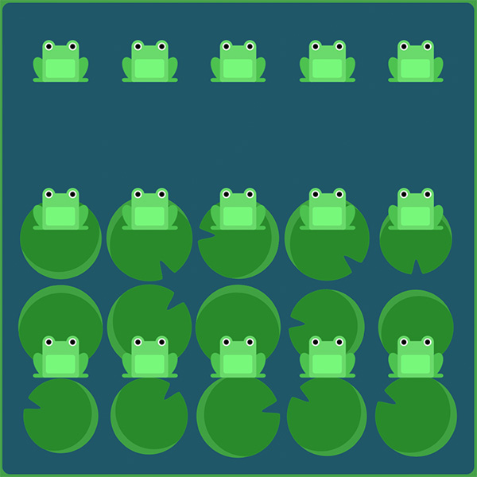
#pond { display: flex; flex-wrap: wrap; align-content: flex-end; }
Flexbox Froggy - Lv. 23/24
カエルたちはパーティーを開いていましたが、もう家に帰る時間です。
flex-directionとalign-contentの組み合わせを使って、彼らの蓮の葉まで連れて行ってあげましょう。
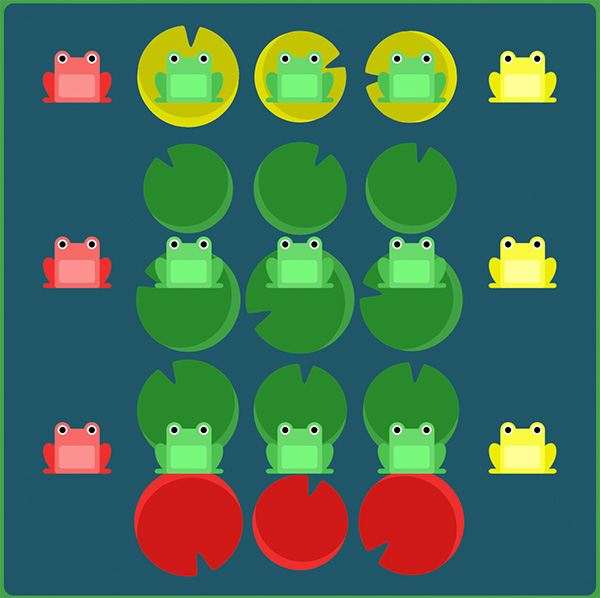
#pond { display: flex; flex-wrap: wrap; flex-direction: column-reverse; align-content: center; }
Flexbox Froggy - Lv. 24/24
これまでに習ったCSSプロパティーを使って、もう一度だけカエルたちを家まで連れていってあげてください。
- justify-content
- align-items
- flex-direction
- order
- align-self
- flex-wrap
- flex-flow
- align-content
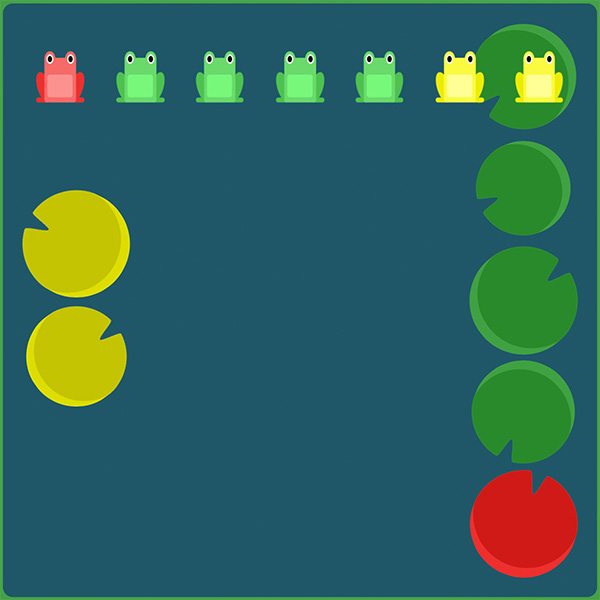
#pond { display: flex; flex-direction: column-reverse; flex-wrap: wrap-reverse; justify-content: center; align-content: space-between; }